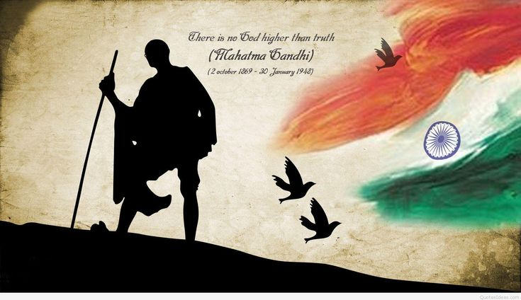

Mahatma Gandhi, born on October 2, 1869, in Porbandar, India, was a prominent leader of the Indian independence movement against British rule. His philosophy of nonviolent resistance, known as Satyagraha, played a pivotal role in India's struggle for freedom.
Gandhi's principles of truth, nonviolence, and self-discipline inspired millions across the world. He was a staunch advocate of simple living, leading by example through his austere lifestyle and dedication to service.

Early Life
Mohandas Karamchand Gandhi was born into a Hindu family in Gujarat, India. He grew up in a middle-class household and showed an early inclination towards spirituality and ethics. Gandhi's upbringing, influenced by the Jain principles of nonviolence, left a lasting impression on his worldview.
After completing his schooling in India, Gandhi traveled to London to study law. His time in England exposed him to Western culture and politics, shaping his understanding of colonialism and injustice.
Career
Gandhi began his career as a lawyer in South Africa, where he experienced firsthand the injustices faced by Indians under colonial rule. His experiences in South Africa propelled him into activism, leading campaigns for civil rights and social justice.
Upon his return to India, Gandhi became involved in the Indian National Congress, advocating for Swaraj (self-rule) and challenging British colonial rule through nonviolent resistance. He led numerous movements and campaigns aimed at achieving independence and social reform.
Achievements
Gandhi's greatest achievement was leading India to independence from British rule through nonviolent means. His philosophy of Satyagraha, or truth force, inspired millions to join the freedom struggle, resulting in India gaining independence in 1947.
Additionally, Gandhi's advocacy for social justice and human rights left a lasting legacy, influencing movements for civil rights and freedom around the world.
Impact on India
Gandhi's impact on India was profound and far-reaching. His principles of nonviolence and civil disobedience united people from diverse backgrounds in the fight against colonial oppression.
Through his leadership and example, Gandhi instilled a sense of pride, self-reliance, and unity among Indians, laying the foundation for a democratic and inclusive society.
Fight for Independence
Gandhi employed various nonviolent tactics, including boycotts, marches, and hunger strikes, to protest British policies and demand independence for India. His most famous campaigns, such as the Salt March and Quit India Movement, mobilized millions and brought international attention to the Indian freedom struggle.
Despite facing imprisonment and violence, Gandhi remained committed to his principles of truth and nonviolence, inspiring generations of Indians to continue the fight for independence.
On Currency
Mahatma Gandhi's image is featured on Indian currency as a tribute to his role in India's independence movement and his enduring legacy as the Father of the Nation. His image on currency serves as a reminder of his principles of truth, nonviolence, and service to humanity.
Gandhi's face on currency symbolizes the values of peace, unity, and progress that he stood for, and serves as an inspiration for future generations to strive for a better world.